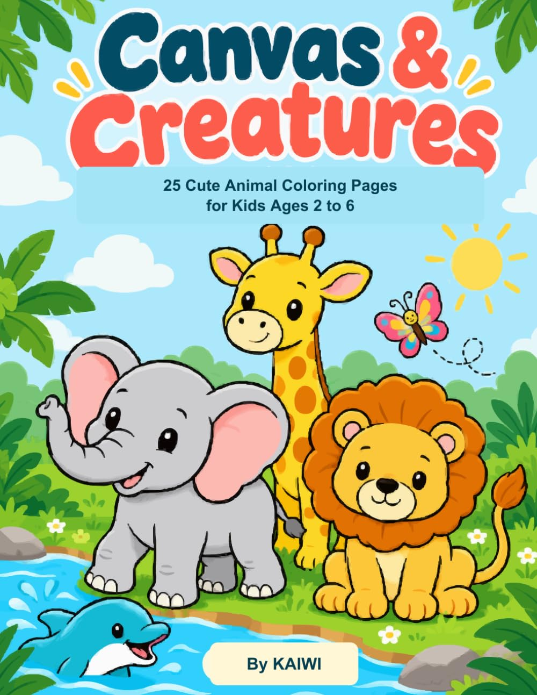
AGES 2–6 · ANIMAL COLORING BOOK
Canvas & Creatures
25 cute animal coloring pages for little artists to explore.
View on Amazon ↗SMALL FINDS. EVERYDAY DIFFERENCE.
Useful things for life on and off the road. Personally used by J, with honest reviews to help you find what fits your day.
Explore J’s picksWhat I like. What I don’t. No sugar coating.
CREATED BY J
A little creativity for the whole family. Explore J’s animal and holiday coloring books for young artists.

AGES 2–6 · ANIMAL COLORING BOOK
25 cute animal coloring pages for little artists to explore.
View on Amazon ↗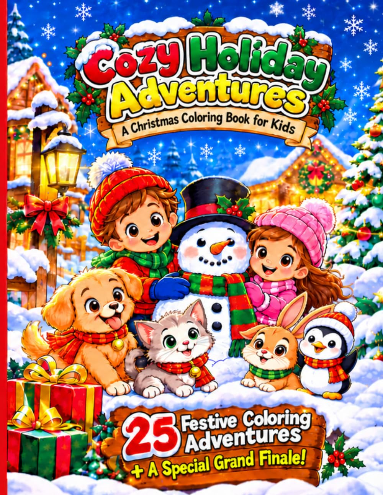
AGES 5–9 · HOLIDAY COLORING BOOK
Festive winter scenes and animal friends for creative holiday time.
View on Amazon ↗These are J’s own books. J earns royalties from book sales. Amazon buttons open in a new tab; current prices and availability are shown on Amazon.
FROM OUR FAMILY’S COLLECTION
COSRX serum, the SIMA dermaplane razor, and Neutrogena makeup remover wipes — three products from my wife’s skin care collection.
Explore her three picksTHE THINGS I ACTUALLY USE
Two parts of life.
The same honest approach.
Personally used. Individually reviewed.
Try a different word or clear the filters to see this collection.
Shopping buttons open Amazon in a new tab. As an Amazon Associate I earn from qualifying purchases, at no extra cost to you.

THE PERSON BEHIND THE PICKS
Just a regular guy who likes learning, trying useful things, and sharing what works for me. I started Health & Wheels by J to show what a little creativity can do.
If you need advice, I’m going to tell you the truth—no sugar coating.
These are my own experiences, not promises. We’re all different. Read my take, check the product information, and choose what makes sense for you.
— JBetter Health. Better Drives. Health & Wheels by J is Julio's home for honest personal reviews of everyday wellness products and car accessories — real experience, no sugar coating.
If you need advice, I'm going to tell you the truth—no sugar coating. You'll find what a normal person uses, and then some. You don't have to trust me; you don't know me personally. I'm just sharing what works for me. Remember, we're all different!
Start with your need, not a giant list of products. J's goal is to make finding something useful simple.
Products J personally uses as part of his everyday routine.
See J's Wellness PicksProducts J keeps in and uses on his car to make driving, cleaning, and everyday care easier.
See J's Car PicksDon't know where to look? Pick what you're trying to find. That's it.
See products Julio personally uses and read his straightforward experience.
Go to Wellness →See the products Julio actually keeps in and uses on his car.
Go to Wheels →These are products J personally uses as part of his routine. Read why he chose them and decide what makes sense for you.
Some links are affiliate links. J may earn a commission if you buy through them, at no extra cost to you.
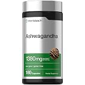
Why J uses it: J includes it in his routine because he likes having it as part of his everyday wellness routine.
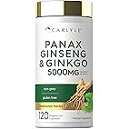
Why J uses it: J includes this combination because it fits easily into his everyday wellness routine.
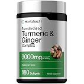
Why J uses it: J includes turmeric and ginger in his routine because he likes keeping them as part of his everyday wellness routine.
These are products J has personally used for years. The reviews focus on his experience—not promises about what they will do for someone else.
Why J uses it: J includes ashwagandha in his everyday routine for stress, sleep quality, and memory.
J's experience: He has used it for more than five years and continues to use it.
Why J uses it: J includes this combination because it fits easily into his everyday wellness routine.
J's experience: He has used the combination for more than five years and continues to use it.
Why J uses them: J includes turmeric and ginger in his routine for joint comfort, immune support, and digestion.
J's experience: He has used them for more than five years and continues to use them.
“Everything I put on my body, I still use because I feel it works for me. No promises that it's going to work the same for everyone. We are all different!”
These are products J actually uses in his car. The goal is simple: show what they are, why J keeps them, and what customers should know before buying.
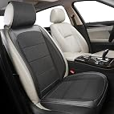
Why J uses them: J recently replaced his old seat covers with a flexible-fitting, breathable, water-resistant set. He finds them comfortable and would buy them again.
Personal pick • Recently purchased
Paid link. I may earn a commission if you buy through this link.
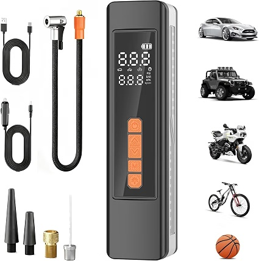
Why J uses it: A compact item J keeps with him for convenient inflation when needed.
Personal pick • 6 months of use
Paid link. I may earn a commission if you buy through this link.
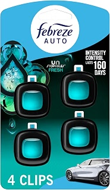
Why J uses it: J uses these as part of his routine for keeping the car smelling fresh.
Buy Febreze Auto vent clips on Amazon → • Paid link. I may earn a commission if you buy through this link.
Read J's Review →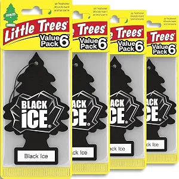
Why J uses it: J likes using these in the summer because they don't contain liquid, so they last longer for him.
Buy Little Trees Black Ice on Amazon → • Paid link. I may earn a commission if you buy through this link.
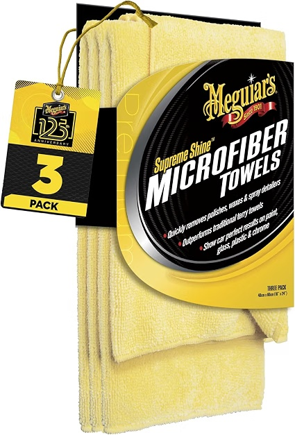
Why J uses it: J likes these because they absorb water well and help him clean the windows without leaving stains. He keeps one for the interior and one for the exterior.
Buy Meguiar's microfiber towels on Amazon → • Paid link. I may earn a commission if you buy through this link.
Read J's Review →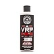
Why J uses it: J has used Chemical Guys VRP for over 5 years on his tires and plastic parts inside and outside the vehicle. He likes the creamy texture and how it holds up on his tires.
Buy Chemical Guys VRP on Amazon → • Paid link. I may earn a commission if you buy through this link.
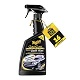
Why J uses it: J uses this as part of his paint-care routine because he likes the shine and the added protection it gives the vehicle's finish.
Buy Meguiar's detailing spray on Amazon → • Paid link. I may earn a commission if you buy through this link.
My experience using VRP on my car for over five years.
I use Chemical Guys VRP on tires and plastic parts inside and outside my vehicle. I've kept using it for more than five years because I like how it looks and how long it lasts for me.
The creamy texture makes it easy for me to apply, and I find the finish lasts longer than other products I've tried.
It's a creamy dressing, so I recommend wearing gloves when applying it.
Yes. I keep extra bottles at home because it's part of my regular detailing routine.
This is my personal experience. Your results may be different.
Check Chemical Guys VRP on Amazon →
Paid link. I may earn a commission if you buy through this link.
How I use detailing spray in my regular paint-care routine.
I use this spray because I like the shine and added protection it gives my car's paint. It helps me keep the finish looking clean between bigger detailing sessions.
It helps protect the paint from everyday stains and gives the vehicle a nice shine. Sometimes it lets me go longer between waxing sessions.
I still recommend waxing your car at least once a year. For me, a detailing spray is a helpful part of maintenance, not a complete replacement for waxing.
This is my personal experience. Follow the product instructions for your vehicle's finish.
Check Meguiar's Detailing Spray on Amazon →
Paid link. I may earn a commission if you buy through this link.
My honest experience after using them for years.
Febreze Auto vent clips attach to your car's air vents and release fragrance while the air is moving through the vehicle.
I've used Febreze Auto vent clips for years because I like keeping my car smelling fresh. I especially like using them during the colder months.
During hot summer weather, they don't last as long for me. The liquid seems to evaporate faster in the heat.
Yes. I've been using them for years, and I continue to buy them—especially when the weather is cooler.
Good everyday car product, with the main drawback being how quickly the scent seems to disappear in hot weather for me.
Check Febreze Auto Vent Clips on Amazon →
Paid link. If you buy through this link, I may earn a qualifying commission at no extra cost to you.
J's Promise: Real experience, no hype. This is my personal experience. Everyone is different, and your results may vary.
J's honest experience using Little Trees Black Ice in his car.
Little Trees Black Ice are simple hanging car air fresheners that J uses to help keep his car smelling fresh.
J likes using these in the summer because they don't contain liquid, so they last longer for him.
Yes. J continues to use them, especially during the summer.
For J, Little Trees Black Ice are a simple way to keep the car smelling fresh, especially when the weather is hot.
J's promise: Real experience, no hype. This is J's personal experience. Everyone is different.
Buy Little Trees Black Ice on Amazon →
Paid link. I may earn a commission if you buy through this link.
J's honest experience using Meguiar's microfiber towels for cleaning his vehicle.
Meguiar's microfiber towels are cleaning towels that J uses to help clean and dry parts of his vehicle.
J likes them because they absorb water well and help him clean the windows without leaving stains.
Yes. J keeps them as part of his regular vehicle-cleaning routine.
For J, these are simple, useful towels that do the job he needs them to do when cleaning his car.
J's Promise: Real experience, no hype. This is J's personal experience. Everyone is different.
Buy Meguiar's microfiber towels on Amazon →
Paid link. I may earn a commission if you buy through this link.
J's personal experience with flexible-fitting, breathable, water-resistant seat covers.
How long I've used them: Recently purchased.
Why I bought them: I got these to replace my old seat covers.
What I like: The fit is very flexible, and the material is breathable and water-resistant. I also find the covers comfortable.
Would I buy them again? Yes.
Check the Seat Covers on Amazon →
Paid link. If you buy through this link, I may earn a qualifying commission at no extra cost to you.
J's take: I bought these to replace my old seat covers. I like the flexible fit, breathable material, and water resistance, and I find them comfortable enough that I would buy them again.
A real-world review based on about six months of J's personal use.
How long I've used it: About 6 months.
How I use it: I use it for the tires on my car, footballs, and the wheels on my two-wheeler.
What I like: The portability. I carry it in my backpack every day, so it's always available when I need it.
What I don't like: It can get pretty hot when I use it a lot. That's something I think is important for a customer to know.
J's take: I like having a small inflator with me because it can handle more than just my car tires. The portability is the biggest reason I keep carrying it.
Note: Always follow the manufacturer's instructions, including any recommended duty cycle or cool-down time.
Check the Tire Inflator on Amazon →
Paid link. If you buy through this link, I may earn a qualifying commission at no extra cost to you.
No hype. No pretending every product is perfect. Every detailed review will answer the questions a real customer would ask.
The real problem or need that led J to choose the product.
A simple explanation based on J's actual experience.
The practical benefits J personally notices.
Limitations, things to consider, and who may or may not find it useful.
Hi, I'm Julio — the J behind Health & Wheels by J.
I'm always looking to learn new things every day. I like trying products, figuring out what works for me, and sharing what I learn along the way.
I also love animals, especially dogs and farm animals.
I created this site because I wanted to show what a normal person can do with very little. You just have to be creative, trust yourself, and be willing to learn.
If you need advice, I'm going to tell you the truth—no sugar coating. On this site you'll find what a normal person uses, and then some.
You don't have to trust me. You don't know me personally. I'm simply sharing what works for me. Remember, we're all different.
Health & Wheels by J is starting small on purpose. The goal is to share real products Julio actually uses, earn trust, and gradually build several income streams rather than depending on one source.
Our rule: We do not recommend something just because it pays us. If Julio hasn't used it or cannot stand behind the recommendation honestly, it doesn't belong here.